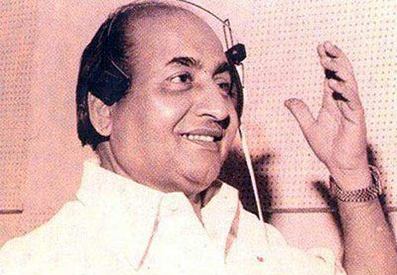

MOHAMMAD RAFI

Mohammed Rafi:Made a comeback as a leading singer in mid 1970s. In 1974 he won the Film World magazine Best Singer Award for the song "Teri Galiyon Mein Na Rakhenge Kadam Aaj Ke Baad"
The Life of Mohammad Rafi
Mohammed Rafi (24 December 1924 – 31 July 1980) was an Indian playback singer and musician.
Rafi was notable for his versatility and range of voice; his songs varied from fast peppy numbers to patriotic songs, sad numbers to highly romantic songs, qawwalis to ghazals and bhajans to classical songs.[7] He was known for his ability to mould his voice to the persona and style of the actor lip-syncing the song on screen in the movie.
He received six Filmfare Awards and one National Film Award. In 1967, he was honored with the Padma Shri award by the Government of India. In 2001, Rafi was honoured with the "Best Singer of the Millennium" title by Hero Honda and Stardust magazine. In 2013, Rafi was voted for the Greatest Voice in Hindi Cinema in the CNN-IBN's poll.
Mohammed Rafi was the second eldest of six brothers born to Allah Rakhi and Haji Ali Mohammad in a Punjabi Jat Muslim family.The family originally belonged to Kotla Sultan Singh, a village near present-day Majitha in Amritsar district of Punjab, India.Rafi, whose nickname was Pheeko, began singing by imitating the chants of a fakir who roamed the streets of his native village Kotla Sultan Singh.
Rafi moved to Bombay (now Mumbai), Maharashtra in 1944. He and Hameed Sahab rented a ten-by-ten-feet room in the crowded downtown Bhendi Bazar area. Poet Tanvir Naqvi introduced him to film producers including Abdur Rashid Kardar, Mehboob Khan and actor-director Nazeer.
Shyam Sunder was in Bombay and provided the opportunity to Rafi to sing a duet with G. M. Durrani, "Aji dil ho kaabu mein to dildar ki aisi taisi...," for Gaon Ki Gori, which became Rafi's first recorded song in a Hindi film.
In 1949, Rafi was given solo songs by music directors such as Naushad (Chandni Raat, Dillagi and Dulari), Shyam Sunder (Bazaar) and Husnalal Bhagatram (Meena Bazaar).
Lata Mangeshkar, his contemporary, has said that "Rafi bhaiya was not only India's greatest playback singer but also a wonderful person" and that "he was one singer whose vocal range could outclass any other singer, whether it was me, Asha, Mannada or Kishore bhaiya"
GENRES->
1.Filmi 2.Bhajans 3.Ghazals 4.Qawwali 5.Shabad 6.Na'at 7.Classical[3]Nazrul Geeti 8.Comedy Music
PRIVATE ALBUMS->
Rafi sang several songs in Chris Perry's Konkani album Golden Hits with Lorna Cordeiro. He recorded many private albums in various genres and languages. Rafi recorded Hindi songs in English on 7" release in 1968. He also sang 2 songs in Mauritian Creole while on his visit to Mauritius in the late 1960s.
In the 1970s, Rafi suffered from a throat infection for an extended period of time.[36] During a brief period then, he recorded relatively fewer songs.Although his musical output was relatively low during this period, he did sing some of his best numbers then.
DEATH->
Mohammed Rafi died at 10:25 pm on July 31, 1980, following a massive heart attack, aged 55.[48] The last song sung by Rafi was for the movie Aas Paas, with music by Laxmikant-Pyarelal. One source says it was "Shaam Phir Kyun Udaas Hai Dost/Tu Kahin Aas Paas Hai Dost", recorded just hours before his death.[30][49][50] Another source says that it was "Shehar mein charcha hai" from the same film.
For more information, check out